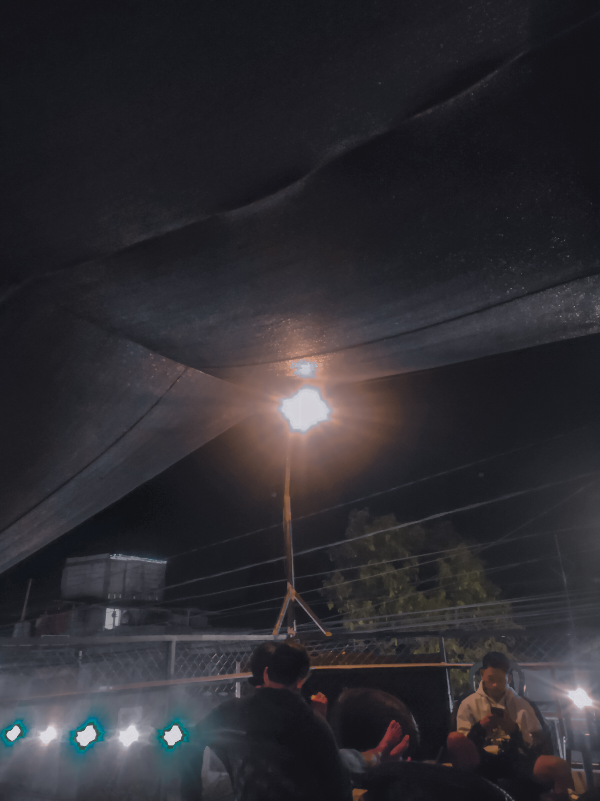

Portfolio
Inilah beberapa hasil kerja saya.



Caffe
Photography

Tugu Yogyakarta
Tugu Yogyakarta adalah sebuah tugu atau monumen yang sering dipakai sebagai simbol atau lambang dari Kota Yogyakarta. Tugu yang terletak di perempatan Jalan Jenderal Sudirman dan Jalan Margo Utomo ini, mempunyai nilai simbolis yang merupakan garis yang bersifat magis yang menghubungkan Pantai Parangtritis dan Panggung Krapyak di Kabupaten Bantul, Keraton Yogyakarta di Kota Yogyakarta dan Gunung Merapi di Kabupaten Sleman.

Gedung Bank BNI 1946 Yogyakarta.jpg
Gedung Bank BNI 1946 Yogyakarta adalah sebuah gedung Art Deco yang terletak di Kota Yogyakarta, Daerah Istimewa Yogyakarta. Gedung ini diisi oleh Bank Negara Indonesia Kantor Cabang Utama Yogyakarta. Gedung ini pada mulanya merupakan kantor Nederlandsch-Indische Levensverzekeringen en Lijfrente Maatschappij.

Alun Alun kidul
Alun Alun kidul Yogyakarta merupakan salah satu wisata yang menawarkan pesona jogja malam hari. Alun Alun kidul atau lebih dikenal dengan Alkid berada tepat dibelakang keraton Yogyakarta. .

Stasiun Tugu
Stasiun Yogyakarta (YK) atau yang biasa dikenal sebagai Stasiun Tugu, adalah stasiun kereta api kelas besar tipe A yang terletak di Sosromenduran, Gedongtengen, Kota Yogyakarta pada ketinggian +113 meter. Stasiun ini merupakan stasiun utama di Kota Yogyakarta dan Daerah Istimewa Yogyakarta Bangunan stasiun beserta rel KA yang membujur dari barat ke timur berada di Gedongtengen..

Caffe
Kafe dari (bahasa Prancis: café) secara harfiah adalah tempat (minuman) kopi. Kafe adalah jenis restoran yang biasanya menyajikan kopi dan teh, selain minuman ringan seperti makanan yang dipanggang atau makanan ringan. Istilah "café" berasal dari kata Perancis yang berarti "kopi".

Liquid Paradewa
Liquid vape atau sering disebut liquid vapor, e-juice, vape juice, atau vapor juice merupakan cairan yang merupakan komponen penting untuk vape (Mod Vape atau Vape Pod) supaya dapat menghasilkan asap. Liquid untuk vape ini hadir dalam berbagai rasa, aroma, dan level nikotin..